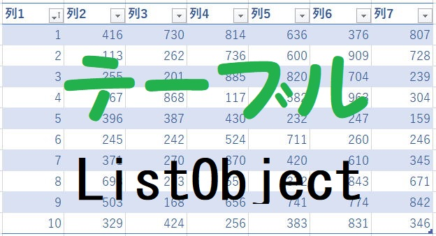

第130回.テーブル操作の概要（ListObject）

テーブルのVBAでの操作で使用するオブジェクトの概要の説明です、
関連するデータの管理と分析を容易にできるエクセルの機能で、以前はリストと呼ばれていました。
テーブルを作成して書式設定することで、データを視覚的にグループ化して分析しやすくできます。
・テーブル全体
・見出し行
・データ範囲
・集計列
・集計行
VBAでは、これらのオブジェクトを使い各要素にアクセスします。
テーブル全体のオブジェクトがListObjectで、
シート内に複数テーブルが作成可能なので、
シート内のListObjectのコレクションがListObjectsになります。
ListObjects コレクション
| メソッド | 説明 |
| Add | 新しいリストオブジェクトを作成します。 |
| プロパティ | 説明 |
| Application | 対象となるオブジェクトが指定されない場合は、Excelアプリケーション(Applicationオブジェクト)を返します。 対象となるオブジェクトが指定された場合は、指定されたオブジェクトを作成したApplicationオブジェクトを返します。 OLEオートメーションを使っていて、オブジェクトのアプリケーションにアクセスするときなどに、このプロパティを使います。 値の取得のみ可能です。 |
| Count | コレクションに含まれるオブジェクトの数を表す整数型(Integer)の値を返します。 |
| Creator | 現在のオブジェクトが作成されたアプリケーションを示す32ビットの整数を取得します。 値の取得のみ可能です。長整数型(Long)の値を使用します。 |
| Item | コレクションから単一のオブジェクトを返します。 |
| Parent | 指定されたオブジェクトの親オブジェクトを取得します。 値の取得のみ可能です。 |
太字は特に覚えるべき重要なメンバーになります。
Addメソッドについてのみ詳細を掲載しておきます。
| パラメーター | 説明 | ||||||||||
| SourceType | クエリで使用されるソースの種類を指定します。
|
||||||||||
| Source | SourceType=xlSrcRangeの場合は、省略可能です。 データソースを示すRangeオブジェクトの値を使用します。 この引数を省略すると、Sourceにはリスト範囲検出コードが返す既定の範囲が指定されます。 SourceType=xlSrcExternalの場合は、データソースへの接続を示す1つの配列を指定します。 配列の各要素には、文字列型(String)の値を次のように格納します。 |
||||||||||
| LinkSource | 外部データソースをListObjectオブジェクトにリンクするかどうかを指定します。 SourceTypeがxlsrcexternalの場合、既定値はTrueになります。 SourceTypeがxlsrcrange/省略されている場合は無効です。 省略した場合は、エラーが返されます。 |
||||||||||
| XlListObjectHasHeaders | インポートされているデータに列ラベルがあるかどうかを示すXlYesNoGuess列挙型定数を指定します。 ソースにヘッダーが含まれていない場合、Excelは自動的にヘッダーを生成します。 既定値はxlguessです。 |
||||||||||
| Destination | 新しいリストオブジェクトの左上隅のリンク先として単一セル参照を指定するRangeオブジェクト。 Rangeオブジェクトが複数のセルを参照する場合は、エラーが生成されます。 SourceTypeがxlsrcexternalに設定されている場合は、Destination引数を指定する必要があります。SourceTypeがxlsrcrange出力に設定されている場合、引数Destinationは無視されます。 移動先の範囲は、式で指定されたlistobjectsコレクションが含まれているワークシート上にある必要があります。 新しい列は、新しいリストに適合するようにコピー先に挿入されます。 したがって、既存のデータは上書きされません。 |
||||||||||
| TableStyleName | TableStyleの名前。 たとえば、"TableStyleLight1"のようになります。 |
ListObject オブジェクト
ListObjectsコレクションのメンバーです。
| メソッド | 説明 |
| Delete | ListObjectオブジェクトを削除し、ワークシートからセルデータをクリアします。 |
| ExportToVisio | ListObjectオブジェクトをVisioにエクスポートします。 |
| Publish | ListObjectオブジェクトをMicrosoftSharePointFondationを実行しているサーバーに公開します。 |
| Refresh | MicrosoftSharePointFondationを実行しているサーバーからリストの現在のデータとスキーマを取得します。 このメソッドは、リストがSharePointサイトにリンクされている場合にだけ使用できます。 SharePointサイトが利用できない場合は、このメソッドを呼び出すとエラーが返されます。 |
| Resize | Resizeメソッドを実行すると、ListObjectオブジェクトが新しい範囲に合わせてサイズ調整されます。 セルの挿入や移動は行われません。 |
| Unlink | MicrosoftSharePointFondationサイトへのリンクをリストから削除します。Nothingを返します。 |
| Unlist | ListObjectオブジェクトからリストとしての機能を削除します。 このメソッドを実行すると、リストを構成していたセル範囲は、通常のデータの範囲となります。 |
| プロパティ | 説明 |
| Active | ワークシート内にあるListObjectオブジェクトがアクティブかどうか、つまり作業中のセルがListObjectオブジェクトの範囲内に存在するかどうかを示すブール型(Boolean)の値を返します。 値の取得のみ可能です。ブール型(Boolean)の値を使用します。 |
| AlternativeText | 指定されたテーブルに関連付ける代替テキストを設定します。 値の取得および設定が可能です。 |
| Application | 対象となるオブジェクトが指定されない場合は、Excelアプリケーションを返します。 対象となるオブジェクトが指定された場合は、指定されたオブジェクトを作成したApplicationオブジェクトを返します。 OLEオートメーションを使っていて、オブジェクトのアプリケーションにアクセスするときなどに、このプロパティを使います。 値の取得のみ可能です。 |
| AutoFilter | オートフィルターを使ってテーブルにフィルターをかけます。 値の取得のみ可能です。 |
| Comment | リストオブジェクトに関連付けられたコメントを設定します。 値の取得および設定が可能です。文字列型(String)の値を使用します。 |
| Creator | 現在のオブジェクトが作成されたアプリケーションを示す32ビットの整数を取得します。 値の取得のみ可能です。 長整数型(Long)の値を使用します。 |
| DataBodyRange | テーブルの見出しの行を除く、値の範囲を表すRangeオブジェクトを取得します。 値の取得のみ可能です。 |
| DisplayName | 指定されたListObjectオブジェクトの表示名を設定します。 値の取得および設定が可能です。文字列型(String)の値を使用します。 |
| DisplayRightToLeft | Trueの場合、指定されたListObjectの表示が右から左の表示方向になります。 Falseの場合、オブジェクトを左から右の表示にします。 値の取得のみ可能です。ブール型(Boolean)の値を使用します。 |
| HeaderRowRange | 1つのリスト(リスト:互いに関連するデータが入力された一連の行または[リストの作成]コマンドを使ってデータシートとして機能するように作成された一連の行。)に関するヘッダー行の範囲を表すRangeオブジェクトを取得します。 値の取得のみ可能です。Rangeオブジェクト型の値を使用します。 |
| InsertRowRange | 指定されたListObjectオブジェクトに関する挿入行(挿入行:リストにおいて、ユーザーにデータ入力を促すための特殊な行です。 挿入行は、アスタリスクで示されます。)(存在する場合)を表すRangeオブジェクトを返します。 値の取得のみ可能です。Rangeオブジェクト型の値を使用します。 |
| ListColumns | ListObjectオブジェクト内にあるすべての列を表す1つのListColumnsコレクションを取得します。 値の取得のみ可能です。 |
| ListRows | ListObjectオブジェクト内にあるデータのすべての行を表す1つのListRowsオブジェクトを取得します。 値の取得のみ可能です。 |
| Name | ListObjectオブジェクトの名前を表す文字列型(String)の値を取得または設定します。 |
| Parent | 指定されたオブジェクトの親オブジェクトを取得します。 値の取得のみ可能です。 |
| QueryTable | ListObjectオブジェクトにサーバーへのリンクを提供するQueryTableオブジェクトを取得します。 値の取得のみ可能です。 |
| Range | 上位リストの指定されたリストオブジェクトが適用される範囲を表すRangeオブジェクトを取得します。 |
| SharePointURL | 指定したListObjectオブジェクトに対応する、SharePointリストのURLを表す文字列型(String)の値を返します。 値の取得のみ可能です。文字列型(String)の値を使用します。 |
| ShowAutoFilter | オートフィルターを表示するかどうかを示します。ブール型(Boolean)の値を使用します。 値の取得および設定が可能です。 |
| ShowHeaders | 指定されたListObjectオブジェクトに対してヘッダー情報を表示するかどうかを設定します。 値の取得および設定が可能です。ブール型(Boolean)の値を使用します。 |
| ShowTableStyleColumnStripes | 指定されたListObjectオブジェクトに対して列のストライプの表スタイルが使用されるかどうかを設定します。 値の取得および設定が可能です。ブール型(Boolean)の値を使用します。 |
| ShowTableStyleFirstColumn | 指定されたListObjectオブジェクトに対し、最初の列を書式設定するかどうかを設定します。 値の取得および設定が可能です。ブール型(Boolean)の値を使用します。 |
| ShowTableStyleLastColumn | 指定されたListObjectオブジェクトに対し、最後の列を表示するかどうかを設定します。 値の取得および設定が可能です。ブール型(Boolean)の値を使用します。 |
| ShowTableStyleRowStripes | 指定されたListObjectオブジェクトに対して行のストライプの表スタイルが使用されるかどうかを設定します。 値の取得および設定が可能です。ブール型(Boolean)の値を使用します。 |
| ShowTotals | 集計行を表示するかどうかを示します。ブール型(Boolean)の値を使用します。 値の取得および設定が可能です。 |
| Sort | ListObjectコレクションの並べ替え列と並べ替え順序を取得または設定します。 |
| SourceType | リストの現在のソースを表すXlListObjectSourceTypeクラスの定数を取得します。 |
| Summary | 指定されたテーブルの代替テキスト文字列に関連付けられた説明を設定します。 値の取得および設定が可能です。 |
| TableStyle | 指定されたListObjectオブジェクトに対する表スタイルを設定します。 値の取得および設定が可能です。バリアント型(Variant)の値を使用します。 |
| TotalsRowRange | 指定したListObjectオブジェクトに集計行が存在する場合、その集計行を表すRangeオブジェクトを取得します。 値の取得のみ可能です。 |
| XmlMap | 指定したテーブルに適用されているスキーママップを表すXmlMapオブジェクトを返します。 値の取得のみ可能です。 |
太字は特に覚えるべき重要なメンバーになります。
テーブル操作のVBAコード
同じテーマ「マクロVBA入門」の記事
第123回.APIについて（Win32API）
第124回.Workbookのイベントプロシージャー
第125回.Worksheetのイベントプロシージャー
第130回.テーブル操作の概要（ListObject）
第131回.テーブル操作のVBAコード（ListObject,DataBodyRange）
第142回.テーブル全件処理とデータ最終行（ListObject,DataBodyRange）
第127回.他のブックのマクロを実行（Runメソッド）
第128回.マクロをショートカットで起動（OnKeyメソッド）
第129回.レジストリの操作（SaveSetting,GetSetting,GetAllSettings,DeleteSetting）
第133回.引数の数を可変にできるパラメーター配列（ParamArray）
第134回.Errオブジェクトとユーザー定義エラー
新着記事NEW ・・・新着記事一覧を見る
VBA100本ノック 100本目：WEBから100本ノックのリストを取得｜VBA練習問題（3月3日）
VBA100本ノック 99本目：自動席替え（行列と前後左右が全て違うように）｜VBA練習問題（3月2日）
VBA100本ノック 98本目：席替えルールが守られているか確認｜VBA練習問題（3月1日）
VBA100本ノック 97本目：Accessデータを取得（グループ集計）｜VBA練習問題（2月27日）
VBA100本ノック 96本目：Accessデータを取得（マスタ結合&抽出）｜VBA練習問題（2月26日）
VBA100本ノック 95本目：図形のテキストを検索するフォーム作成｜VBA練習問題（2月24日）
VBA100本ノック 94本目：表範囲からHTMLのtableタグを作成｜VBA練習問題（2月23日）
VBA100本ノック 93本目：複数ブックを連結して再分割｜VBA練習問題（2月22日）
VBA100本ノック 92本目：セルの色を16進で返す関数｜VBA練習問題（2月20日）
VBA100本ノック 91本目：時間計算（残業時間の月間合計）｜VBA練習問題（2月19日）
アクセスランキング ・・・ ランキング一覧を見る
1.最終行の取得（End,Rows.Count）｜VBA入門
2.RangeとCellsの使い方｜VBA入門
3.変数宣言のDimとデータ型｜VBA入門
4.マクロって何？VBAって何？｜VBA入門
5.Range以外の指定方法（Cells,Rows,Columns）｜VBA入門
6.セルのコピー&値の貼り付け（PasteSpecial）｜VBA入門
7.繰り返し処理（For Next)｜VBA入門
8.セルに文字を入れるとは（Range,Value）｜VBA入門
9.マクロはどこに書くの（VBEの起動）｜VBA入門
10.とにかく書いてみよう（Sub,End Sub）｜VBA入門
このサイトがお役に立ちましたら「シェア」「Bookmark」をお願いいたします。
記述には細心の注意をしたつもりですが、
間違いやご指摘がありましたら、「お問い合わせ」からお知らせいただけると幸いです。
掲載のVBAコードは動作を保証するものではなく、あくまでVBA学習のサンプルとして掲載しています。
掲載のVBAコードは自己責任でご使用ください。万一データ破損等の損害が発生しても責任は負いません。